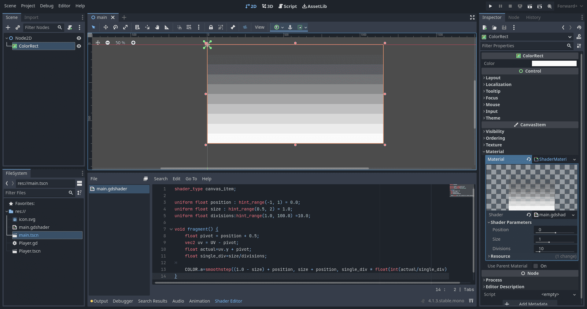

shader_type canvas_item;
uniform float position : hint_range(-1, 1) = 0.0;
uniform float size : hint_range(0.5, 2) = 1.0;
uniform float divisions:hint_range(1.0, 100.0) =10.0;
void fragment() {
float pivot = position + 0.5;
vec2 uv = UV - pivot;
float actual=uv.y + pivot;
float single_div=size/divisions;
COLOR.a=smoothstep((1.0 - size) + position, size + position, single_div * float(int(actual/single_div)));
}
Editor screenshot for reference:
